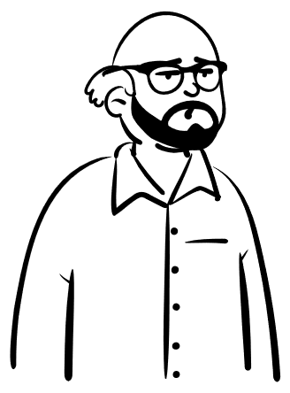
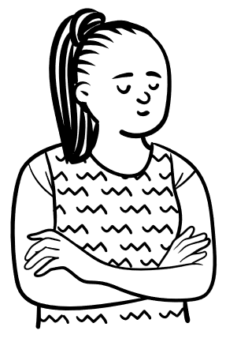
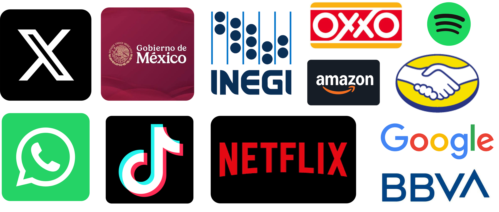
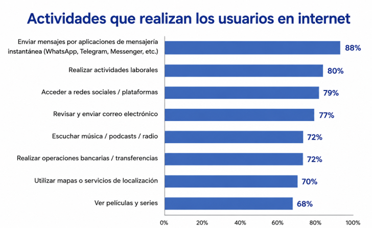

Introducción a la ingeniería de datos
Introducción a los datos
Universidad Autónoma de Ciudad Juárez
August 2026
Introduccion
Objetivo
Al finalizar esta lección serás capaz de:
- Definir qué es un dato.
- Identificar los principales tipos de datos primitivos.
- Reconocer ejemplos de cada tipo de dato en situaciones cotidianas.
Pregunta
¿Qué tienen en común una fotografía, un mensaje de WhatsApp y la temperatura de una ciudad?
¿Qué son los datos?
Definición de datos
Los datos son un conjunto de hechos, números, palabras, observaciones u otra información útil. A través del procesamiento de datos y análisis de datos, las organizaciones transforman datos sin procesar en insights valiosos que mejoran la toma de decisiones e impulsan mejores resultados comerciales. ibm_data_2026?

Dicho de otra forma…
Los datos son información que podemos almacenar, organizar y analizar para responder preguntas o tomar decisiones.

¿Quién genera datos?

¿Quién genera datos?
La pregunta importante no es quién genera datos, sino quién no los genera.
Empresas, gobiernos, hospitales, bancos, aplicaciones, videojuegos e incluso nosotros generamos datos constantemente.
Por ejemplo, cada día generamos datos de ubicación, mensajes, compras, música, navegación y redes sociales.
Todos generan datos.
¿Quién genera datos?
Según un estudio realizado por el INEGI sobre los hábitos de usuarios de Internet en México durante 2024 inegi_habitos_internet_2024?, las actividades que realizamos todos los días generan una enorme cantidad de datos.
¿Quién genera datos?

¿Quién genera datos?
De hecho, esto dice Internet:
- Google maneja cerca de 40,000 petabytes de datos diariamente. google_data_2024?
- WhatsApp entrega alrededor de 100 billones de mensajes al día. whatsapp_messages_2020?
- En TikTok se suben más de 23 millones de videos cada día, es decir, aproximadamente 16,000 videos por minuto.tiktok_statistics_2025?
¿Qué datos generan?
- Mensajes enviados
- Hora del mensaje
- Destinatario
- Archivos compartidos
- Llamadas realizadas
- Tiempo de conexión
¿Qué datos generan?
- Películas y series reproducidas
- Tiempo de reproducción
- Búsquedas realizadas
- Calificaciones
- Listas personales
- Dispositivo utilizado
¿Qué datos generan?
- Ubicación de origen y destino
- Tiempo del viaje
- Costo del viaje
- Conductor asignado
- Calificación del viaje
- Método de pago
Idea clave
Todos generamos datos… pero no todos los datos son iguales.
Tipos de datos
No todos los datos son iguales
Ya vimos que los organismos generan muchos datos y de muchos tipos:
- Numéricos: precios, temperatura, edades, venta
- Texto: mensajes, correos, comentarios, búsquedas
- Fecha y hora: fechas de compra, horarios, duración, registros de acceso.
- Ubicación: GPS, rutas, direcciones
- Imágenes: fotografías, radiografías, publicaciones
- Audio: canciones, notas de voz, llamadas
- Video: películas, videollamadas, TikToks
Datos numéricos
Los datos numéricos representan cantidades que pueden medirse o contarse. Se utilizan para realizar operaciones matemáticas y análisis estadísticos.
Ejemplos:
- Edad de una persona.
- Temperatura de una ciudad.
- Precio de un producto.
- Número de estudiantes.
Ejemplo real
25 años · 18 °C · $350.00 · 12 km · 150 estudiantes
Datos de texto
Los datos de texto representan información formada por letras, palabras, símbolos o frases. Se utilizan para describir, identificar o comunicar información.
Ejemplos:
- Nombre de una persona.
- Dirección de correo electrónico.
- Comentario de un usuario.
- Mensaje de WhatsApp.
Ejemplo real
“Denisse Urenda” · “ingenieria.datos@uacj.mx”
Datos de fecha y hora
Los datos de fecha y hora representan momentos específicos en el tiempo. Se utilizan para registrar cuándo ocurre un evento y analizar su secuencia o duración.
Ejemplos:
- Fecha de nacimiento.
- Hora de una compra.
- Fecha de un examen.
- Hora de inicio de una llamada.
Ejemplo real
15/08/2026 · 08:30 a.m. · 2026-07-13 14:25:36 · 12:00 p.m.
Datos de ubicación
Los datos de ubicación representan un lugar o una posición geográfica. Se utilizan para localizar personas, objetos o eventos.
Ejemplos:
- Dirección de un domicilio.
- Coordenadas GPS.
- Ruta de un viaje.
- Ubicación de un restaurante.
Ejemplo real
31.6904, -106.4245 · Av. Tecnológico 1340 · Ciudad Juárez, Chihuahua
Datos de imagen
Los datos de imagen representan información visual capturada mediante fotografías, dibujos, radiografías o ilustraciones.
Ejemplos:
- Fotografía.
- Radiografía.
- Imagen satelital.
- Captura de pantalla.
Ejemplo real
📷 selfie.jpg · 🩻 radiografia.png · 🌎 satelite.tif
Datos de audio
Los datos de audio representan sonidos o grabaciones que pueden almacenarse y reproducirse digitalmente.
Ejemplos:
- Canción.
- Nota de voz.
- Llamada telefónica.
- Podcast.
Ejemplo real
🎵 musica.mp3 · 🎙️ nota_de_voz.m4a · 📞 llamada.wav
Datos de video
Los datos de video representan una secuencia de imágenes, generalmente acompañadas de audio, que permiten registrar o reproducir movimiento.
Ejemplos:
- Película.
- Videollamada.
- Video de seguridad.
- TikTok.
Ejemplo real
🎬 pelicula.mp4 · 📹 reunion.mp4 · 🎥 tiktok.mp4
Idea clave
Los datos pueden representarse de muchas formas.
Y cada una requiere una manera distinta de almacenarse.
Resumen
- Todos generamos datos en nuestras actividades diarias.
- Los datos pueden representar distintos tipos de información, como números, texto, fechas, imágenes, audio, video o ubicaciones.
- Identificar el tipo de dato es el primer paso para almacenarlo, procesarlo y analizarlo correctamente.
Referencias
Preguntas

Laboratorio
En el laboratorio pondremos en práctica los conceptos vistos en esta lección mediante ejemplos y actividades guiadas.
Ingeniería de Datos · UACJ